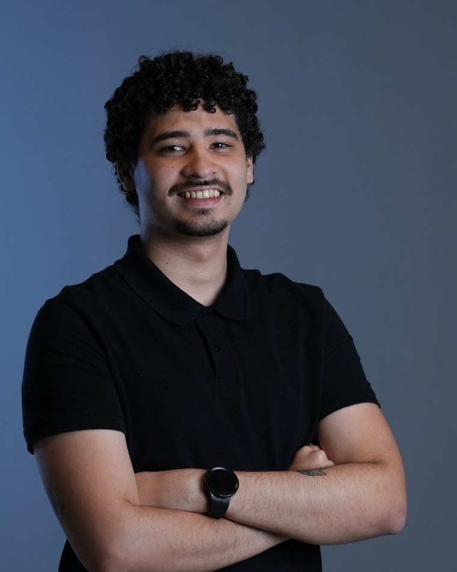

// X Ada Lovelace Day 2026MDC · 10 anos
O código que muda tudo
Uma história sobre decisões, becos sem saída e as linhas que viraram o jogo.

// quem sou eu
Gabriel Vítor
Silva Brito
Dev Full Stack & AI Agent Builder
Zyria · Grupo Accerto
- estudandoPós-graduação em Inteligência Artificial
- formaçãoSistemas de Informação · IF Goiano Ceres
- comeceiTécnico em Informática para Internet
- já fuiMonitor de Dev Web e estagiário na Orb Govtech
- no github2.800+ contribuições
// antes de começar
Quem aqui já pensou em desistir de alguma coisa que está fazendo agora?
levanta a mão ✋Essa palestra é sobre os momentos em que eu quase apaguei essa linha. E o que aconteceu quando eu não apaguei.
// hoje é ada lovelace day
O primeiro código que mudou tudo foi escrito por uma mulher.
Ada Lovelace escreveu um algoritmo pra uma máquina que nem existia ainda. Mais de 180 anos depois, a gente continua escrevendo em cima do que ela imaginou.
Nenhuma linha de código muda tudo sozinha. Mas alguém precisa escrever a primeira.
// de onde eu vim
Antes de qualquer linha de código.
interior de Goiás// a primeira escolha
Por que o técnico?
if (escolha === "técnico") { // a decisão que parecia pequena }
// o momento em que quase apaguei tudo
O quase-desisti.
// refactor()
Do técnico até aqui.
- inícioTécnico em Informática para Internetonde tudo começou
- graduaçãoSistemas de InformaçãoIF Goiano · Ceres
- 2023Monitoria de Dev Webensinar pra aprender
- 2025Estágio na Orb Govtechprimeiro produto real
- hojeDev Full Stack & AI Agent BuilderZyria · Grupo Accerto
- 2026Pós em Inteligência Artificialconclusão em outubro
// o técnico não é "meio caminho"
O técnico é plataforma de lançamento.
Você já está dentro do jogo
Sair do ensino médio com formação técnica é algo que muita gente só consegue anos depois.
As portas existem agora
Estágio, extensão, pesquisa, olimpíada. Várias só abrem enquanto você é aluno.
Portfólio pesa mais que diploma
Comece a construir agora. Não depois da faculdade.
// oportunidades.filter(jaExistem)
Portas que estão abertas pra você hoje.
Monitoria
Explicar pros colegas é o jeito mais rápido de aprender de verdade.
Iniciação científica
Existe bolsa de pesquisa pra estudante do ensino médio.
Extensão
Resolver problema de gente real, com orientação.
Olimpíadas e hackathons
OBI, maratonas e desafios de programação.
Estágio
O primeiro contato com produto, prazo e usuário de verdade.
Meninas Digitais
Uma comunidade inteira que existe pra abrir porta. Use.
// requirements.txt do mercado
O que o mercado cobra hoje.
programar# pré-requisito, não diferencial resolver_problema# o que realmente separa as pessoas comunicacao# explicar pra quem não é dev aprender_rapido# vale mais que saber tudo usar_ia_bem# novo, e já é obrigatório
// import ia from "todo lugar"
A IA não tirou a sua vaga. Ela mudou qual é a vaga.
Quem sabe colocar IA em produto real
Não basta usar o chat. Tem que integrar, testar e fazer funcionar pra alguém.
Não é ficção científica
Agente de IA que executa tarefa de verdade é o que eu construo no dia a dia.
Estão começando na hora certa
Estudar IA no técnico é largar antes de muita gente que já está no mercado.
// como pensar uma solução · exemplo: a fila da cantina
Diagnosticar. Arquitetar. Vender.
Qual é a dor de verdade?
Qual é o jeito mais simples que resolve?
Consigo explicar em 30 segundos?
// próximos imports
Onde estudar a partir de amanhã.
CS50 · Harvard
Fundamentos de computação, de graça.
Kaggle Learn
Python, dados e machine learning em cursos curtos.
Hugging Face
Curso gratuito sobre modelos de linguagem e IA.
GitHub Student Pack
Ferramentas pagas liberadas pra estudante.
Documentação oficial
Mais confiável que vídeo solto de 10 minutos.
Construa em público
Projeto no GitHub funciona como currículo.
// return
O código que muda tudo não está na tela.
É o que você decide escrever na sua própria história.
return você;
// fim da execução
Obrigado!
Perguntas? Pode chamar depois também.
- portfóliobielvitooor.github.io
- githubgithub.com/bielvitooor
- linkedinin/bielvitooor
- e-mailgabrielvitorsilvabrito@gmail.com
aponta a câmera · bielvitooor.github.io